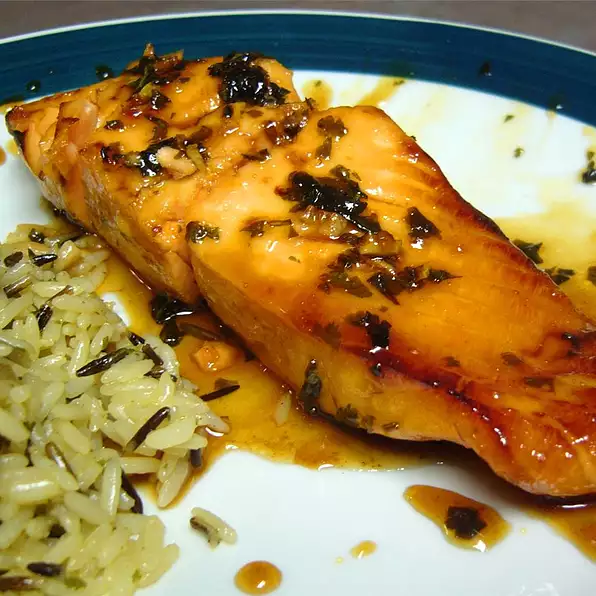

The Best Salmon Recipe In Town

Try our one of a kind homemade Salmon recipe guarantee to keep you in the kitchen
This Salmon recipe is one our best homemade that will keep you thinking about the next family dinner made from some
of the best fresh products from cilantro leaves, honey, garlic etc followed with step by step instructions on how to get the best results when cooking.
Ingredients
- 1 bunch cilantro leaves, chopped
- 2 cloves garlic, chopped
- 2 cups honey
- juice from one lime
- 4 salmon steaks
- salt and pepper to taste
Steps
- In a small saucepan over medium-low heat, stir together cilantro, garlic, honey, and lime juice.
Heat until the honey is easily stirred, about 5 minutes. Remove from heat, and let cool slightly.
- Place salmon steaks in a baking dish, and season with salt and pepper. Pour marinade over salmon, cover, and refrigerate 10 minutes.
- Preheat an outdoor grill for high heat.
- Lightly oil grill grate. Place salmon steaks on grill, cook 5 minutes on each side, or until fish is easily flaked with a fork.